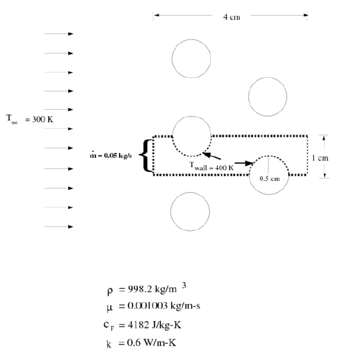
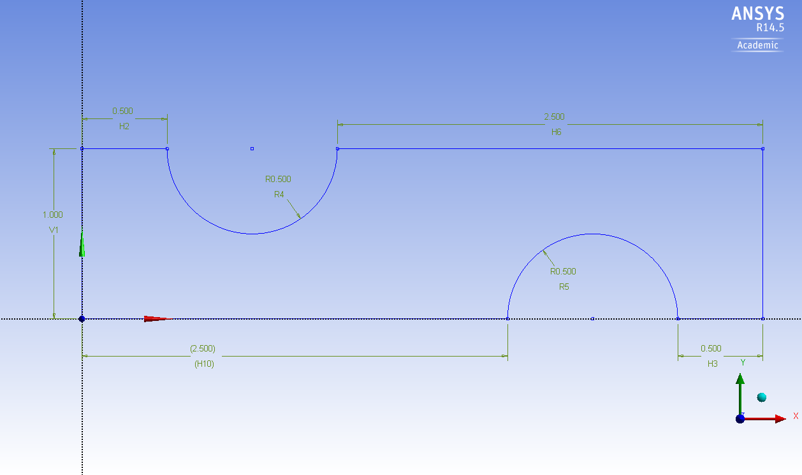
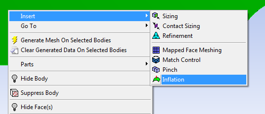
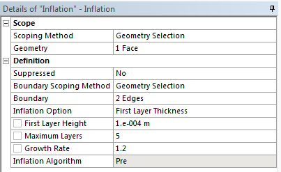
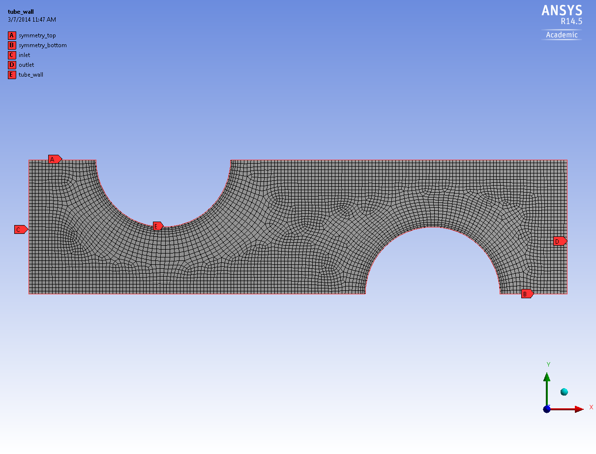
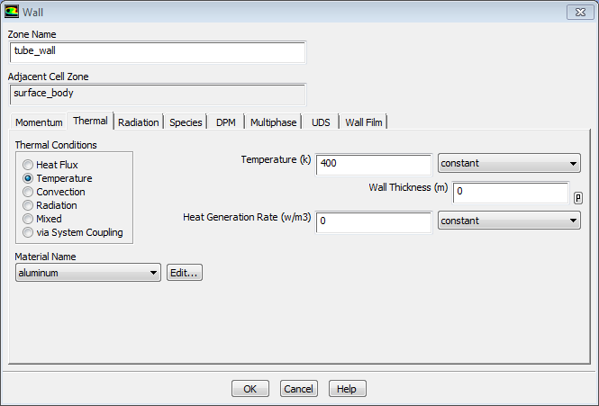
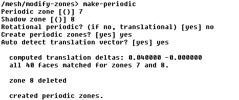
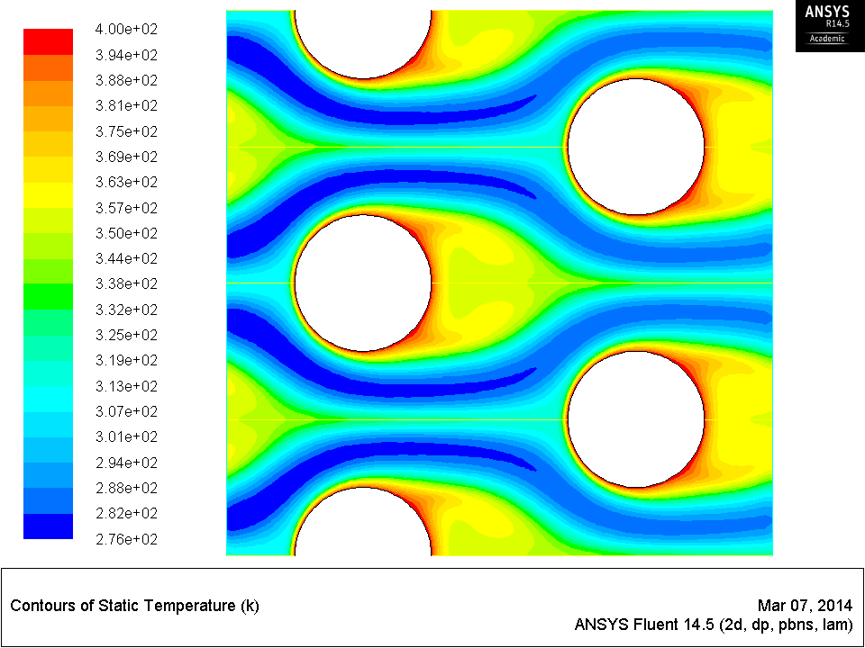

Heat Transfer in a Tube Bank¶
Introduction¶Many industrial applications, such as steam generation in a boiler or air cooling in the coil of an air conditioner, can be modeled as two-dimensional periodic heat flow. This tutorial illustrates how to set up and solve a periodic heat transfer problem.
The system that is modeled is a bank of tubes containing a flowing fluid at one temperature that is immersed in a second fluid in cross flow at a different temperature. Both fluids are water, and the flow is classified as laminar and steady, with a Reynolds number of approximately $100$. The mass flow rate of the cross flow is known and the model is used to predict the flow and temperature fields that result from convective heat transfer.
Due to symmetry of the tube bank and the periodicity of the flow inherent in the tube bank geometry, only a portion of the geometry will be modeled in ANSYS FLUENT, with symmetry applied to the outer boundaries. The resulting mesh consists of a periodic module with symmetry. In the tutorial, the inlet boundary will be redefined as a periodic zone, and the outflow boundary defined as its shadow.
This problem considers a $2D$ section of a tube bank. The bank consists of uniformly spaced tubes with a diameter of $1\,\text{cm}$ which are staggered across the cross-fluid flow. Their centers are separated by a distance of $2\,\text{cm}$ in the $x$ direction, and $1\,\text{cm}$ in the $y$ direction. The bank has a depth of $1\,\text{m}$, a mass flow rate of $0.05\,\text{kg/s}$ is applied to the inlet boundary of the periodic module. The temperature of the tube wall (T_wall) is $400\,\text{K}$ and the bulk temperature of the corss flow water (T) is $300\,\text{K}$.

Geometry¶
- Open ANSYS Design Modeler and select $centimeter$ as the length unit.
- Use line and arc drawing tools to make the base sketch.
- Next, use dimension tools to scale the sketch (dimensions shown in the below picture).
- Last, make a surface from the sketch.

Mesh¶
Unfortunately, we cannot use a mapped face meshing for this geometry. So let’s stick to unstructured mesh.
- Change the
Max Face Size to $2.5×10^{-4}\,\text{m}$
$Note:$ ANSYS works in $meter$ from here.
- Generate and examine the mesh.
It looks fine in general. However, we want finer mesh around the tubes to resolve the thermal gradient. Assigning refined grids near certain boundaries is called $Inflation$ in ANSYS.
- Select the
Mesh in the Outline window and right click on it -> Insert -> Inflation.

- In the
Details of Inflation, select the $2$ semicircles as the Boundary (hold Ctrl key on the keyboard to select multiple edges).
- Change the
Inflation Option to First Layer Thickness, and enter $1×10^{-4}\,\text{m}$ for the First Layer Height and $5$ for the Maximum Layers.
- Keep the
Growth Rate as $1.2$.

- Now generate the mesh again.

Notice the change around the tubes.
- Name the left boundary as “inlet”, the right “outlet”, the semicircles “tube_wall”, top two edges “symmetry_top”, and bottom two edges “symmetry_bottom”.
Setup¶
- Open FLUENT and select double precision.
- In the
Models, turn on Energy Equation.
- In the
Materials, create water-liquid from FLUENT database.
- In the
Cell Zone Conditions, change the material in surface_body zone to water-liquid.
- In the
Boundary Conditions, make sure the symmetric boundaries are of type symmetry.
- Edit the
tube_wall to make its temperature fixed at $400\,\text{K}$.

Next, we will make the inlet and outlet boundaries $periodic$.
- Find out their $ID’s$ (next to the boundary type).
- Go to the
text user interface and type in “mesh/modify-zones/make-periodic”.
- Enter the inlet ID for $Periodic$ $zone$ $[()]$, and hit enter.
- Enter the outlet ID for $Shadow$ $zone$ and type "no" for $Rotational$ $periodic$, and then twice type "yes".

- Note that a new button appears .
- Click on it to open the
Periodic Conditions window.
- Choose
Specify Mass Flow, and enter $0.05$ for the mass flow rate. Keep the rest settings as default.
- Go to
Solution Controls, and change the Under-Relaxation Factors of Energy to $0.9$ for better convergence.
- Initialize the solution using
Standard Initialization, and run $1000$ iterations.
- Note how the residuals decrease.
Post-processing¶In FLUENT, you can display mirror images if there is a symmetric boundary.
- Go to
Graphics and Animations and click the Views… button.
- Select both
symmetry_top and symmetry_bottom in the Mirror Planes list, and click Apply.
Now you can plot contours and streamlines as usual and notice the difference.

|

 This content is available under a Creative Commons Attribution-NonCommercial 4.0 Unported License.
This content is available under a Creative Commons Attribution-NonCommercial 4.0 Unported License.